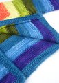

|
||
Premium Patterns Wintry Mix Mitts Love Bytes HawkeyeFree Patterns Kiddie Cadet Summerlin Ruffled Scarf Seamless DS Sock Simply Seamless Pouch Myriads of MushroomsExtras DIY Mitten Blocker Felt Patch Tutorial Yarn Dyeing Tutorial Needle Pouches Knitting Journal |
March 11, 2008 - Posted by Alice SchneblyFeel the Rainbow Project Specs I imagine the only thing better than knitting with eight different beautiful colors of Malabrigo is getting to be the The subtle variations in the Kettle Dyed Solids really lend themselves well to this pattern. The rainbow of colors is already gorgeous, but the fact that there are even more shades present within each individual color makes it even better. Malabrigo can’t be beat either with their color selection. There are so many beautiful color combinations that are possible. Could you imagine a Tulip sweater done all in shades of blue Malabrigo? Or a firey version from reds and oranges? I even love just the thought of it! This would be a great pattern for stash busting. For all the colors but Tuareg (which I used for the borders, cuffs, and ties as well as a stripe) I used between 35 and 65 yards. A Tulip Sweater would be the perfect use for those partial balls of Malabrigo that you may have laying around. In fact, the purple I used in this sweater was leftover from Camdyn’s Tomten Jacket. Even if you had smaller amounts, you could vary the width of your stripes for a fun and crazy look. There is only one thing I’d change if I knit this sweater again. Next time around I’d add a color (or two or three maybe if I knit the size 6) to make the sweater longer. By the time I realized it was going to be shorter than I had expected it was too late to add in a different color. I really had no idea that the larger sizes would require more than 8 stripes when I ordered the Malabrigo for the sweater. Thank goodness for blocking, is all I can say. The sleeves were very cropped before washing and blocking. Now it seems to fit Camdyn well, at least at the moment. Overall I’m still pleased with how the sweater turned out, though I don’t think it will fit her as long as I had planned! Other than the length issues I had, the pattern was really easy to follow and fun to knit. Because of the stripes and the fun color change rows it didn’t drag on at all. It was so fun to see the colors flow into each other that it was hard to put down! I really love how the applied i-cord edging gives the sweater a finished look. Of course this means lots of picking up stitches which is just fine by me! I’m really beginning to realize I have an unhealthy love of picking up stitches. I guess we all probably have our knitting quirks! |
   Recent ReviewsRecent Posts
 Our Favorites
|
| © 2007 KathrynIvy.com | ||

{kind=link}
{kind=link}
{kind=link}